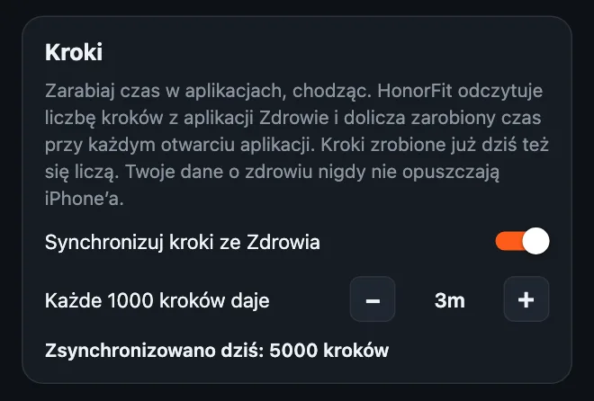

Twoje kroki mogą teraz dawać czas przed ekranem
Cześć wszystkim! Krótko o najnowszej funkcji HonorFit, która wzięła się prosto z maila od użytkownika. HonorFit to blokada aplikacji, w której zarabiasz czas przed ekranem, robiąc pompki (albo przysiady, ćwiczenia Kegla czy cokolwiek wybierzesz), na słowo honoru. Bez kamery.
Ktoś zapytał: mój telefon i tak liczy kroki, to czemu one też nie mogą dawać czasu? Dobre pytanie. No to teraz dają. HonorFit potrafi odczytać liczbę kroków z Apple Health (aplikacji Zdrowie) na iPhonie albo z Health Connect na Androidzie i automatycznie zamienić ją na czas w aplikacjach.
Jak to włączyć
- Zaktualizuj HonorFit do wersji 1.18.0 lub nowszej.
- Stuknij zębatkę na ekranie głównym i znajdź kartę Kroki.
- Włącz Synchronizuj kroki ze Zdrowia (iPhone) albo Synchronizuj kroki z Health Connect (Android).
- Zezwól na Kroki, kiedy telefon zapyta. HonorFit prosi tylko o odczyt kroków. O nic więcej.
I tyle. Kroki, które już dziś zrobiłeś, liczą się od razu, a pod przełącznikiem zobaczysz „Zsynchronizowano dziś” z liczbą kroków.

Na Androidzie potrzebujesz Health Connect, który jest wbudowany od Androida 14. Na starszych telefonach HonorFit odeśle cię do Google Play, żeby go pobrać. Potrzebujesz też czegoś, co zapisuje kroki w Health Connect, np. Google Fit, Samsung Health albo Fitbit. To, że telefon gdzieś liczy kroki, nie zawsze znaczy, że je udostępnia.
Ile czasu dają kroki?
Domyślnie każde 1000 kroków daje 3 minuty. Możesz to zmienić tuż pod przełącznikiem, od ułamka sekundy w górę, ile tylko chcesz.
| Kroki | Przy 3 min za 1000 (domyślnie) | Przy 5 min za 1000 |
|---|---|---|
| 2000 (mniej więcej 20-minutowy spacer) | 6 minut | 10 minut |
| 5000 | 15 minut | 25 minut |
| 10 000 | 30 minut | 50 minut |
Jak ja bym wybierał: spokojny spacer to mniej więcej 100 kroków na minutę, plus minus. Jeśli masz ćwiczenie na czas Spacer z domyślną wartością 30 sekund za minutę, to około 5 minut za 1000 kroków sprawi, że kroki i zapisane spacery będą warte mniej więcej tyle samo. Jeśli i tak dużo chodzisz (pies, dojazdy, praca na nogach), ustaw mniej, żeby aplikacje nie odblokowywały się po prostu codziennie za darmo.
Kiedy pojawiają się kroki?
Za każdym razem, gdy otwierasz HonorFit. Także wtedy, gdy otwierasz go z ekranu blokady, kiedy zablokowanej aplikacji skończy się czas. Aplikacja odczytuje sumę z całego dnia, odkłada do banku kroki zrobione od ostatniego razu i pokazuje na ekranie głównym małe „👟 +15m za 5000 kroków”.
Więc patent jest taki: idziesz na spacer, potem otwierasz HonorFit i czas już tam jest. Nigdy nie płaci dwa razy za te same kroki. Jeśli ostatnia synchronizacja była wczoraj, kroki zrobione wczoraj późnym wieczorem najpierw zaliczają się do wczoraj. Jeśli masz włączony „Reset o północy”, te późne kroki nadal pojawią się w historii z wczoraj, ale nie dodadzą czasu na dziś, bo wczorajsze saldo zostało już wyzerowane.
HonorFit nie odczytuje kroków w tle. Robi to tylko wtedy, gdy go otworzysz. Historię kroków znajdziesz w sekcji Historia, w osobnym widoku Kroki.
Czy to jest za darmo?
Tak, synchronizacja kroków jest za darmo i nie ma limitu kroków. Jedyny limit darmowej wersji, który tu obowiązuje, to ten co zawsze: za darmo odkładasz do 2 godzin czasu w aplikacjach. Jeśli bank jest pełny, kroki ponad ten limit nie przechodzą dalej. Pro (w USA 3 USD miesięcznie albo 19,99 USD jednorazowo) pozwala odkładać czas bez limitu.
Dwie drobne rzeczy: tryb trudny i tryb chorobowy zmieniają tylko wartość powtórzeń, nie kroków. A kroki nie liczą się jako trening do serii dni. Do tego zrób kilka powtórzeń.
Jedna uwaga w duchu słowa honoru: jeśli zapisujesz Spacer na czas i synchronizujesz kroki, dostajesz zapłatę dwa razy za ten sam spacer. Nikt cię nie powstrzyma, ale wybierz jedno. Moja propozycja: niech kroki pokrywają zwykłe chodzenie, a treningi zapisuj za prawdziwe treningi.
Widzisz 0 kroków?
- iPhone: iOS nigdy nie mówi aplikacjom, czy odmówiłeś odczytu kroków. Po prostu przekazuje zero. Otwórz aplikację Zdrowie, stuknij swoje zdjęcie profilowe, potem Aplikacje → HonorFit, i włącz Kroki.
- Android: otwórz Health Connect (gdy HonorFit nie znajdzie kroków, na karcie Kroki pojawia się przycisk Otwórz Health Connect) i sprawdź, czy HonorFit może odczytywać Kroki. Potem sprawdź, czy twoja aplikacja do kroków, np. Google Fit, Samsung Health albo Fitbit, zapisuje kroki w Health Connect.
- Potem wróć do HonorFit. Sprawdzi jeszcze raz, gdy tylko wrócisz na ekran Ustawień.
A co z moimi danymi o zdrowiu?
HonorFit odczytuje jedną rzecz: liczbę kroków. Nigdy niczego nie zapisuje w Apple Health ani w Health Connect, a ta liczba nigdy nie opuszcza twojego telefonu. Nie ma konta ani serwera, na który mogłaby trafić. Wszystkie szczegóły są w polityce prywatności (po angielsku).
Jeśli masz pomysły podobne do tego, wiadomości ze strony pomocy (po angielsku) trafiają prosto do mojej skrzynki. Cała ta funkcja istnieje, bo ktoś do mnie napisał.
HonorFit Blocker to darmowa blokada aplikacji na iPhone'a i Androida. Zarabiaj czas przed ekranem pompkami, dowolnym wybranym ćwiczeniem, a teraz też krokami. Na słowo honoru, bez kamery, nic nie opuszcza twojego telefonu.